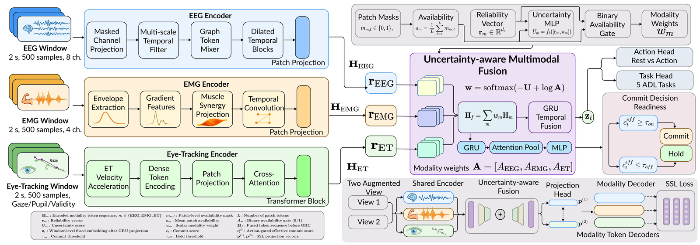
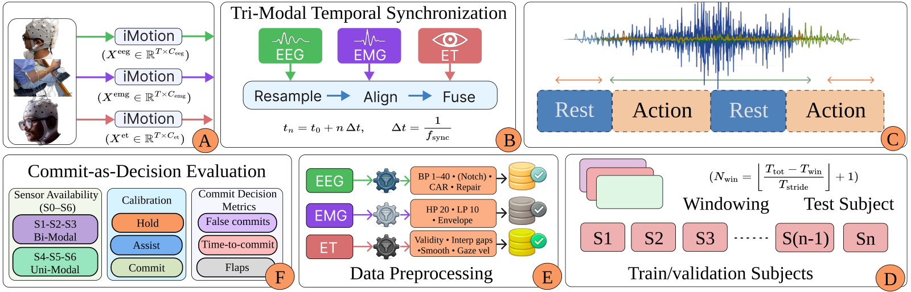
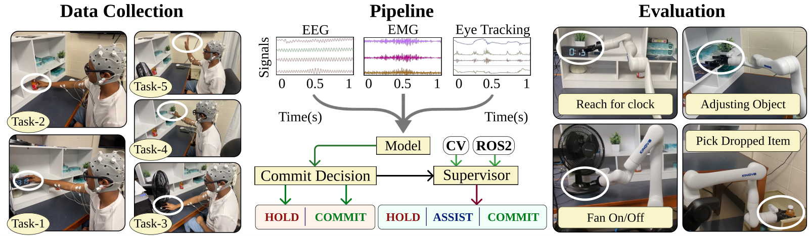

NeuroCommitSSM
A decision-centric shared-autonomy framework that models when to execute, not just what to do. It predicts a continuous commit-readiness score from synchronised EEG, EMG and eye-tracking, turns it into discrete commit events, and refuses to move unless perception and the robot's own kinematics agree that the motion is possible.
{kind=link}

The problem
An assistive arm mounted on a wheelchair has to read its user's intent from noisy, non-stationary biosignals. Almost every intent decoder in the literature is evaluated as window-level classification — accuracy, F1 — and then deployed by thresholding that score. That hides the failure mode that actually matters.
Non-target muscle activity during ordinary daily movement triggers false activations during REST: the arm starts moving when the user never asked it to. Conservative thresholds fix that by missing real intent instead. Neither number appears in an accuracy table.
The reframing. Treat the trigger as a first-class decision problem rather than a post-processing step. Ask not "what does the user want?" but "is it safe to start right now?" — and evaluate with metrics that reflect that: false commits per 1,000 rest windows, and state toggles per minute.
Approach
-
Tri-modal encoding with validity masks
EEG (8 ch), EMG (4 ch) and eye tracking are windowed at 500 samples (2.0 s at 250 Hz) and tokenised into 20 patches of size 25 at embedding dimension 160. Per-sample validity masks propagate through tokenisation, fusion and pooling, so an invalid sample never silently contributes.
-
Neurophysiology-aware encoders
EEG uses a multiscale depthwise filterbank projected to six virtual channels weighted by per-channel descriptors and an availability bias. EMG is decomposed into an envelope and a burst proxy, then projected onto four non-negative synergy channels. Eye tracking injects the top-3 salient velocity/acceleration events through cross-attention.
-
Uncertainty-weighted fusion
Fusion weights come from a softmax over negative per-modality uncertainty plus the log of measured availability, so a degraded stream is down-weighted rather than trusted. An entropy penalty stops any single modality dominating the fusion.
-
Commit readiness, then hysteresis
A commit head outputs a continuous readiness score, action-gated by the predicted action probability. A two-state hysteresis filter emits a commit only after the score exceeds the on-threshold for
Nconsecutive windows, and resets to HOLD below the off-threshold — which is what suppresses flapping. -
HOLD–ASSIST–COMMIT supervision
A three-state ROS 2 supervisor requires the neural commit signal and markerless RGB-D perception feasibility (target visibility, depth support, obstacle proximity) and robot feasibility (IK solvability, collision-free plan, joint limits) to hold simultaneously before motion begins. No fiducial markers, no CAD registration.
{kind=link}

Results
Evaluated on 32 subjects under leave-one-subject-out cross-validation and seven sensor-dropout scenarios — S0 all present, S1–S3 one modality missing, S4–S6 unimodal — with paired Wilcoxon signed-rank tests and Holm correction.
Action detection under sensor dropout
| Model | S0 (all) | S1 (−EEG) | S2 (−EMG) | S4 (EMG only) | S6 (ET only) |
|---|---|---|---|---|---|
| NeuroCommitSSM | 0.950 | 0.943 | 0.854 | 0.785 | 0.701 |
| MM-Transformer (token fusion) | 0.887 | 0.886 | 0.606 | 0.508 | 0.600 |
| GRU (gated fusion) | 0.898 | 0.765 | 0.652 | 0.619 | 0.567 |
| TCN (early concat) | 0.863 | 0.793 | 0.610 | 0.556 | 0.623 |
| Mean pool + linear | 0.782 | 0.782 | 0.517 | 0.500 | 0.517 |
Action balanced accuracy, mean over LOSO folds. Higher is better.
The result that matters: commit quality
Balanced accuracy is the polite metric. The one that decides whether a wheelchair user would tolerate this system is how often the arm starts moving when they were resting.
| Method | FP / 1k REST (S0) | Flaps / min (S0) | FP / 1k REST (S2, −EMG) |
|---|---|---|---|
| NeuroCommitSSM | 0.75 | 6.46 | 0.12 |
| MM-Transformer | 6.49 | 11.93 | 7.08 |
| TCN (early concat) | 8.56 | 11.62 | 80.15 |
| Early-fusion GRU (hysteresis) | 9.44 | 8.51 | 86.01 |
| Unimodal EEG | 25.71 | 16.49 | 25.71 |
| Mean pool + linear | 2.37 | 6.50 | 0.95 |
Baselines do not merely get worse under sensor loss — they collapse. Dropping EMG takes the TCN from 8.56 to 80.15 false commits per 1,000 rest windows and the early-fusion GRU to 86.01. NeuroCommitSSM goes from 0.75 to 0.12, because when a modality disappears the fusion weights and the dwell filter both respond to it instead of ignoring it.
System-level validation
Hardware-in-the-loop replay of recorded biosignals on a real Kinova Gen3 shows that feasibility-checked execution reduces false starts and decision instability without sacrificing task success. Feasibility-triggered aborts are logged with their cause, so a refusal to move is attributable rather than mysterious.
The model is small enough to run in the loop: 2.01 M parameters and 7.89 ± 0.08 ms inference per window at batch size 1 on an A100.
{kind=link}

Video
Contributions
- A decision-centric intent-to-commit model with entropy-regularised multimodal fusion, evaluated on commit-event quality rather than window accuracy alone.
- A ROS 2-native HOLD–ASSIST–COMMIT shared-autonomy framework with markerless RGB-D feasibility checking — no fiducial markers, CAD models or task-specific 6D pose estimators.
- System-level validation on real hardware via hardware-in-the-loop replay, with unsafe-motion prevention and abort-cause analysis.
- Release of, to our knowledge, the first synchronised EEG–EMG–eye-tracking dataset for functionally complete, ICF-aligned assistive ADL intent decoding.
Honest limitations
Hardware-in-the-loop replay is repeatable and lets the full stack be tested, but it is not live human-in-the-loop assistive testing: it does not capture user adaptation, fatigue, trust, or closed-loop co-adaptation. Participants were healthy adults performing the tasks themselves, so results are a non-clinical benchmark, not validation in target users — for whom EMG may be weak or absent entirely.